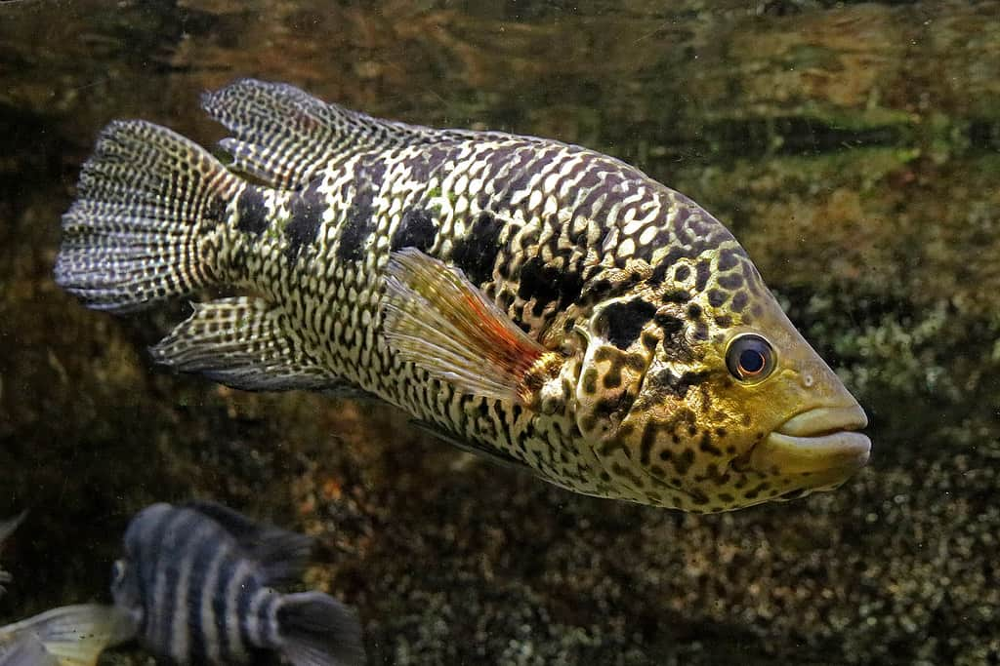
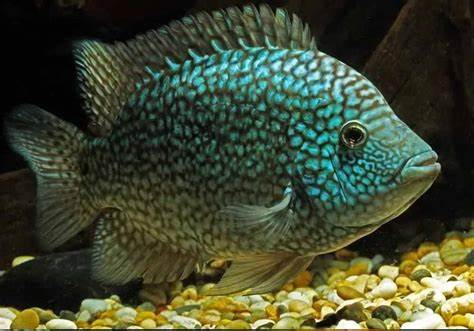
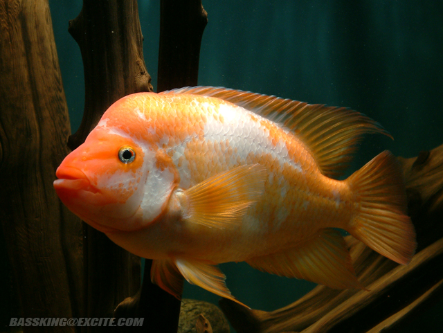
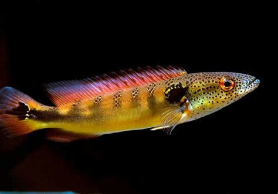
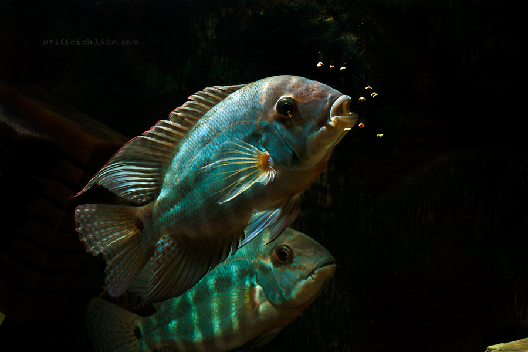
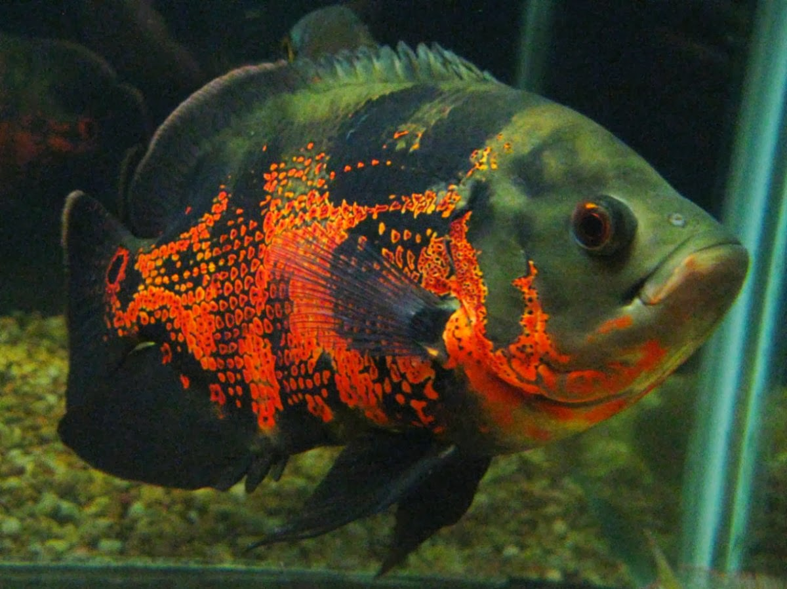
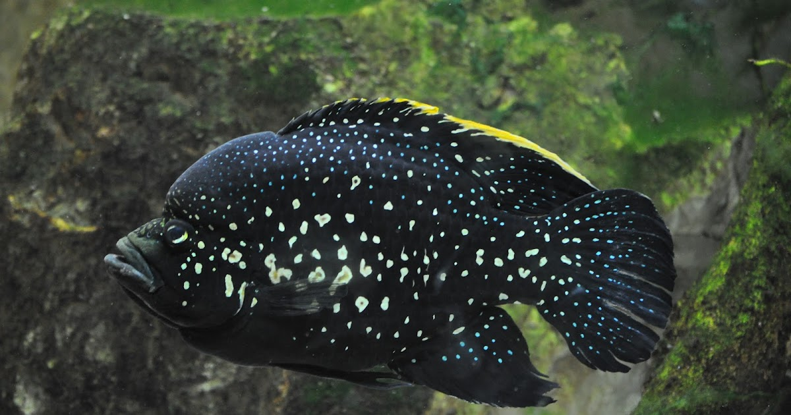

- Aruana prata

O peixe Aruanã Prata ou Arowana Prateada, também conhecido por Língua-de-osso, é uma espécie de peixe
de água doce nativo da América do Sul.
Este peixe Jumbo é conhecido pela sua aparência exótica e intimidadora, com escamas prateadas e corpo
alongado que lhes dão uma aparência semelhante a um dragão. É um peixe muito ativo e curioso, que
necessita de um grande aquário para nadar livremente. Por isso mesmo, não é aconselhado a aquaristas
iniciantes.
Apesar de ser uma espécie fascinante, nunca se esqueça que estes peixes podem viver até aos 20 anos. A
decisão de comprar um Aruanã nunca deve ser tomada de ânimo leve.
Sem mais demoras, fique a conhecer este fascinante peixe e quais os requisitos para ser mantido num
aquário.
Origem da Espécie: América do Sul (Bacia do Rio Amazonas);
Expectativa de Vida: Entre 8 e 25 anos;
Nível de Dificuldade: Moderado – Difícil;
pH: Manter o pH da água entre 6.0 – 7.5;
Dureza da Água: Entre 3 – 10;
Temperatura: Entre 24 – 30°C;
- Tucunaré amarelo (Cichla kelberi);

Sua distribuição ocorre nas Bacias Amazônica e Araguaia-Tocantins. Amplamente introduzido na Bacia do
Prata, principalmente no Alto-Paraná e açudes no Nordeste do Brasil. Já é encontrado em alguns lagos
na
região do Pantanal. Durante a época da seca, habita principalmente as lagoas marginais, partindo para
a
mata inundada (igapó) durante as cheias. Na ausência de lagos, o Tucunaré abriga-se em remansos, pois
não são apreciadores de águas de forte correnteza
Quinze espécies de tucunaré são conhecidas somente na Amazônia. O tucunaré-amarelo (Cichla ocellaris)
pode chegar a um metro, mas o tamanho médio varia entre 30 a 50 centímetros e o peso entre seis e oito
quilos, especialmente nas áreas onde ele foi introduzido.
Os tucunarés são os peixes esportivos brasileiros mais representativos da extensa família dos
Ciclídeos.
A diversidade de cores e padrões de listras é grande: do vermelho ao esverdeado, do amarelo ao
azulado,
com faixas e pintas de variados padrões. Mas todos têm em comum o formato característico do corpo
(alongado), com a cabeça grande e a mandíbula protuberante.
Outra característica é a mancha arredondada perto da cauda, conhecida como ocelo. O tucunaré-amarelo
tem
de três barras transversais de coloração preta e, o corpo, é de um amarelo esverdeado. As nadadeiras
dessa espécie são amareladas (daí o nome). São muito procurados pelos pescadores esportivos,
especialmente nas represas e açudes onde foi introduzido.
O nome do gênero, Cichla, tem origem na palavra kichla, que os gregos antigos usavam para denominar
diversos peixes. Em 1801, quando Cichla foi descrito, muitas espécies de várias partes do mundo
(incluindo um tucunaré), foram incluídas neste gênero. Com o passar dos anos e aumento dos estudos,
muitas mudanças taxonômicas ocorreram, e hoje apenas os tucunarés são chamados de Cichla. O nome
específico kelberi, por sua vez, é uma homenagem a Dielter Kelber, pessoa influente na promoção da
pesca
esportiva dos tucunarés.
Predador por excelência, são as únicas espécies de peixes da Amazônia que perseguem a presa, ou seja,
após iniciar o ataque, dificilmente desistem até conseguir capturá-las. Quase todos os outros peixes
predadores desistem após a primeira ou segunda tentativa mal sucedida. Considerado símbolo da pesca
esportiva no Brasil, possui tamanha voracidade que é capaz de atacar anzóis mesmo sem isca.
Nas lagoas, durante o início da manhã e final do dia, quando a água já está mais fria, os tucunarés
costumam se alimentar próximo às margens. Quando a água esquenta, passam para o centro das lagoas.
Alimentam-se principalmente de peixes, camarões e insetos. Muitas vezes se juntam, fecham um pequeno
cardume de presas, e os encurralam na beirada do rio. É um peixe voraz, que ocupa os níveis superiores
das cadeias alimentares dos rios.
Também conhecido como Tucunaré-pitanga e Tucunaré-popoca. Vivem em grupos, em fase juvenil vivem em
numeroso cardume e a medida que vão atingindo a maturidade sexual o número do cardume diminui
consideravelmente para cerca de 20 a 30 espécimes. Adultos em fase de acasalamento ou não, nadam
sozinhos ou em pares.
Origem da Espécie: América do Sul (Bacia do Rio Amazonas);
Expectativa de Vida: Entre 8 e 25 anos;
Nível de Dificuldade: Moderado – Difícil;
pH: Manter o pH da água entre 6.0 – 7.5;
Dureza da Água: Entre 3 – 10;
Temperatura: Entre 24 – 30°C;
- Ciclídeo jaguar (Parachromis managuensis);

O Ciclídeo Jaguar (Parachromis managuensis) não possui esse nome à toa. A espécie é conhecida por ter
pequenas manchas pretas espalhadas pelo corpo, dando-lhe a aparência de um lindo jaguar.
Curiosamente, quando são jovens, esses peixes não possuem essas cores, já que costumam ser apenas
prateados com toques dourados. Assim que começam a envelhecer, adquirem suas cores características.
Essa espécie é considerada um predador voraz. Eles são projetados para nadar bem rápido e possuem
mandíbulas que se estendem. Além disso, combine essa característica com barbatanas espinhosas e você
terá um peixe que está mais do que pronto para se proteger e atacar.
Anúncios
Assim como inúmeras outras espécies de ciclídeos, esses animais não são para aquaristas iniciantes,
uma
vez que necessitam de grandes aquários devido ao tamanho que podem chegar, e também ao seu
comportamento
bastante agressivo.
Expectativa de Vida: Até 15 anos
Nível de Dificuldade: Difícil;
pH: Manter o pH da água entre 7.0 – 8.7
Dureza da Água: 10° – 15° dH
Temperatura: Manter entre 25°C – 36°C
- Ciclídeo branco (Maskaheros argenteus);

Aquário Mínimo: 100 cm de comprimento X 40 cm de largura — considere um aquário deste porte para um
casal formado ou pet fish. Para aquário comunitário considere aquário com mínimo de 400 litros.
Comportamento & Compatibilidade: Ciclídeos da América Central costumam ser
agressivos,
porém esta
espécie apresenta agressividade moderada. Mas não significa que serão submissos quando pressionado ou
atacado. Pode ser mantido em aquário comunitário desde que este seja de grande porte.
Alimentação: Tendencialmente herbívoro, embora naturalmente também se alimentem de insetos e
crustáceos.
Em aquário poderá ser alimentado com rações específicas para ciclídeos e a base de Spirulina.
Reprodução: Ovíparo, produzem até 200 ovos adesivos em superfícies planas de rochas, raízes ou
plantas,
que eclodem em até três dias, larvas nadam livremente em cerca de cinco dias. Pais cuidam dos alevinos
por semanas.
Dimorfismo Sexual: Machos adultos são maiores e desenvolvem uma leve protuberância na cabeça, além de
possuírem nadadeira dorsal e anal maior e pontiaguda. Fêmeas têm o corpo ligeiramente mais arredondado
e
normalmente têm menos pontos pretos por baixo da zona dos olhos.
Biótopo: Frequentemente encontrado em associação com rochas submersas, raízes de árvores ou em meio a
densa vegetação.
Etimologia: A denominação “argentea” deriva de “prata”, significando “peixe de prata”.
Sinônimos: Vieja argentea, Paraneetroplus argenteus, Cichlasoma argentea
Informações adicionais: Espécie originária do México e Guatemala, na bacia do Rio Usumacinta, Rios
Salinas, San Roman, San Pedro, Corzo e Tulija. Bastante raro no comércio de aquarismo.
Origem da Espécie: América Central: encosta Atlântica, na bacia do rio Usumacinta,
México.
Expectativa de Vida: 10 anos
Nível de Dificuldade: Difícil;
pH: Manter o pH da água entre 7.0 a 7.5
Dureza da Água: Entre 12 – 15;
Temperatura: Entre 26°C a 30°C;
- Ciclídeo texas (Herichthys cyanoguttatus);

O Ciclídeo Texas (Herichthys cyanoguttatus) é considerado o único ciclídeo nativo dos Estados Unidos.
Na maioria das vezes, eles são encontrados nas águas do sul do Texas e do norte do México. A espécie é
também conhecida por ser uma das mais agressivas de todos os ciclídeos, ainda mais se levarmos em
consideração que eles podem alcançar até 30 centímetros de comprimento.
Anúncios
Apesar de sua personalidade agressiva e tendências territoriais, este peixe ganhou bastante espaço no
hobby de aquarismo. Muitos donos consideram esses animais uns dos mais coloridos, já que apresentam
manchas brilhantes por todo o corpo. O macho e a fêmea são muito semelhantes na aparência, embora a
fêmea seja um pouco menor. Os machos também desenvolvem uma pequena protuberância na testa e possuem
barbatanas dorsais pontiagudas.
No geral, o Ciclídeo Texas é um animal fácil de cuidar e come quase de tudo. No entanto, ele não é
recomendado para aquaristas iniciantes, já que possui comportamento agressivo e é famoso por ser
bastante bagunceiro, revirando decorações e cavando o substrato do aquário.
Origem da Espécie: América do Norte (Estados Unidos e México);
Expectativa de Vida: Até 15 anos;
Nível de Dificuldade:Moderado;
pH: Manter o pH da água entre 6.5 – 7.5;
Dureza da Água: 5° – 12° dH;
Temperatura: Manter entre 20°C – 33°C;
- Red devil (Amphilophus labiatus);

O Red Devil (Amphilophus labiatus) é um dos ciclídeos mais impressionantes para se ter em um aquário,
embora seja considerado um animal bastante violento. A espécie, que pode atingir até 28 centímetros de
comprimento, costuma ser uma das mais ferozes e agressivas do gênero.
Anúncios
Abaixo, confira um guia de cuidados completo sobre o Red Devil. Aprenda como alimentar esse peixe,
suas
características físicas e comportamentais, além de processos como a reprodução e configuração de
aquário.
Origem da Espécie: América Central;
Expectativa de Vida: Até 12 anos;
Nível de Dificuldade: Moderado;
pH: Manter entre 6.5 – 7.5;
Dureza da Água: Entre 6 – 25;
Temperatura: Manter entre 24 – 26°C;
- Jacundá açu (Crenicichla lenticulata);

Se você está em busca de um bom desafio na criação de peixes ornamentais, o Jacundá Açu (Crenicichla
lenticulata) definitivamente vai se encaixar nesse projeto. Esse peixe é considerado dos maiores
ciclídeos que existem e possui uma personalidade que lhe permite enfrentar até mesmo espécies maiores
do
que ele.
Abaixo, confira um guia de cuidados completo sobre o Jacundá Açu. Aprenda como alimentar esse peixe,
suas características físicas e comportamentais, além de processos como a reprodução e configuração de
aquário.
Expectativa de Vida: Mais de 10 anos;
Nível de Dificuldade: Difícil;
pH: Manter entre 5.5 – 6.5;
Dureza da Água: Entre 4 – 8;
Temperatura: Manter entre 26 – 29°C;
- Papagaio verdadeiro (Hoplarchus psittacus);

Bela espécie de coloração verde metálica que varia bastante conforme o ambiente, em locais mais
escuros
têm a coloração esverdeada mais pronunciada com manchas características da especia ao longo do corpo
mais aparentes. Em ambientes mais claros, tendem a apresentar uma coloração mais clara e uniforme.
Tem distribuição na bacia amazônica, nos rios Negro, Preto da Uva, Urubu e Jamari, assim como na alto
da
bacia do Orinoco. Habita rios e alagados, onde tem alimentação carnívora de pequenos peixes, insetos,
crustáceos e vermes.
Em aquários, por muitas vezes têm dificuldade para aceitar alimentação seca, de modo que muitos
aquaristas precisam alimentar ao menos inicialmente com alimentos vivos. Os alimentos que podem ser
oferecidos são minhocas, vermes da laranja e pequenos peixes. Quando acostumados à ração, procure
oferecer ração para carnívoros, de boa qualidade.
Expectativa de Vida: 10 anos ;
Nível de Dificuldade: Moderado – Difícil;
pH: Manter o pH da água entre 6.0 a 7.0;
Dureza da Água: Entre 1 a 8;
Temperatura: Entre 26°C a 30°C;
- Green terror (Andinoacara rivulatus);

O Green Terror (Andinoacara rivulatus) é um peixe bastante territorial e agressivo. Eles podem chegar
aos 20 cm de comprimento e viver por até 12 anos em aquários.
Esses peixes aceitam com muita facilidade qualquer tipo de ração, mas procure fornecer alimentos vivos
como artêmias e larvas de mosquito. Além disso, essa espécie é famosa por se alimentar de caramujos.
A diferença de tamanho entre o macho e a fêmea é significativo, pois os machos costumam ter a
barbatana
dorsal e anal mais alongada do que as fêmeas.
Anúncios
No entanto, a espécie precisa de muito espaço para nadar. Para um casal, por exemplo, o aquário
precisa
ter no mínimo 300 litros, ótima filtragem e trocas parciais semanais de água. Evite colocar plantas
nos
aquários com esses peixes, pois eles costumam arrancá-las com muita facilidade.
Expectativa de Vida: Até 12 anos;
Nível de Dificuldade: Moderado – Difícil;
pH: Manter o pH da água entre 6.5 – 8.0;
Dureza da Água: 5° – 18° dH;
Temperatura: Manter entre 20°C – 24°C;
- Oscar (Astronotus ocellatus),

O Astronotus ocellatus ou simplesmente Oscar, encanta à todos que tem a oportunidade de um dia tê-lo
em
seu aquário. Apesar do seu tamanho e comportamento, que não são nada educados, com certeza o Oscar
está
entre os preferidos dos aquaristas. O relacionamento deste peixe com o dono chega a ser fora dos
padrões
de um peixe de aquário com o seu dono, chegando a reconhecer quem o alimenta, pegando comida na mão do
dono e até permitindo carícias em seu dorso.
O aquário para um Oscar deve ter no mínimo 200L, com uma boa filtragem. O sistema de sump é muito
usado
pois promove uma boa oxigenação e manutenção desse tipo de aquário, a iluminação não precisa ser muito
forte. No substrato nada de especial, somente o cascalho comum de rio já é satisfatório.
A decoração fica a cargo não só do aquarista, mas também do peixe que costuma fazer a decoração do
aquário à seu gosto, chegando a mover pedras de tamanho considerável. Plantas são quase impossíveis de
conviver no mesmo aquário de um Oscar, pois ele não deixa uma no lugar e quando você menos esperar,
estarão todas boiando ou destruídas, uma alternativa é experimentar algumas mudas de Microsorum
pteropus, mas ela já deve estar bem fixada à um tronco ou rocha pesados quando o Oscars for colocado
no
aquário. Seu comportamento é bastante territorial e agressivo se for mantido em aquários pequenos, a
não
ser que seja um casal, nesse caso um aquário de 250 litros pode abrigá-los, porém é preciso que seja
realmente um casal e não somente dois peixes de sexos diferentes. Caso o aquarista queira mantê-lo com
outros Oscars e demais peixes de médio e grande porte, um aquário de, no mínimo, 500 litros, será
necessário, dependendo dos companheiros escolhidos.
Oscar jovem (Astronotus ocellatus)
A reprodução não é difícil de acontecer, mas como na maioria dos ciclídeos, os casais se formam
naturalmente. Deve ser colocado um casal num aquário de, pelo menos 250 litros, como mencionado
anteriormente. As paredes laterais e posterior do aquário podem ser pintadas de preto para escurecer o
ambiente e dar mais segurança ao peixe. Temperatura em torno de 28ºC, sistema de aeração e uma
superfície lisa e horizontal no fundo para que os ovos sejam depositados. Alguns casais chegam a
remover
o cascalho do fundo para depositar no vidro. Os pais cuidam dos filhotes depois da eclosão que ocorre
após 3 ou 4 dias. Depois disso, o macho fará um buraco no substrato e transportará os filhotes com a
boca para lá, nesse período os pais se tornam muito agressivos, chegando a atacar seu próprio criador.
A alimentação deve ser iniciada aos filhotes assim que não se notar mais a presença do saco vitelino,
fornecendo pequenas minhocas, carne sem gordura, artêmia, dáfnias, triturando os alimentos antes de
serví-los, caso seja necessário. Logo os filhotes poderão receber a alimentação dos adultos que
consiste
em minhocas adultas, carne bovina sem gordura, carne de peixe, tenébrios, peixes vivos, ração
industrializada etc.[
Expectativa de Vida: Até 10 anos;
Nível de Dificuldade: Fácil / Moderado;
pH: Manter o pH da água entre 6.5 e 7.5;
Dureza da Água: Entre 10 – 20;
Temperatura: Entre 22 e 28°C;
- Ciclídeo de Madagascar (Paratilapia polleni).

Trata-se de um espécime endêmico da ilha de Madagáscar, ilha situada a leste de Moçambique, em pleno
oceano Índico, e separada do continente africano pelo canal de Moçambique. Esta ilha é a quarta maior
ilha do mundo, com uma área de 587 041 km² (dimensão ligeiramente maior que a da França).
O gênero Paratilapia é o ciclídeo mais comum em Madagascar e pode ser encontrado em toda a ilha,
apesar
de algumas espécies hoje em dia já se encontrarem em risco de extinção, principalmente devido à pesca,
pois é um peixe muito apreciado na culinária pelos habitantes locais.
No aquarismo, há pelo menos quatro espécies que circulam pelos aquários mundiais:
1. Paratilapia polleni;
2. Paratilapia bleekeri;
3. Paratilapia typus (também chamada de Paratilapia sp. "Andapa")
4. Paratilapia sp. "East Coast Small Spots" (podendo ser traduzida como Paratilapia sp. "da Costa
Leste
com Pequenas Pintas"); é esta a espécie que mais se encontra à venda no Brasil, ainda que o nome dado
seja Polleni.
Esta última espécie é aquela que mais encontramos nas lojas de aquarismo em todo o mundo, usando o
nome
de Paratilapia polleni (aquela que tenho e que encontramos à venda no Brasil). Trata-se de um peixe
bem
preto e com pequenas pintas claro-azuladas ao longo do corpo.
Nesta espécie vemos com facilidade um macho chegar aos 25 cm de comprimento (por vezes mais), enquanto
a
fêmea raramente ultrapassa os 15 a 17 cm. Ainda assim, é a espécie menor das Paratilapia de
Madagascar.
Em seis meses de vida, um macho chega quase aos 20 cm, enquanto a fêmea nesse mesmo tempo não
ultrapassa
os 10 cm.
Apesar de menor, quase metade do tamanho do macho, a fêmea apresenta quase sempre os melhores padrões
e
cores, contrariamente à maioria dos ciclídeos centro-americanos ou africanos.
Hábitos de caça e comportamento social.
São uma espécie que caça na superfície da água ao escurecer e ao amanhecer, precisamente no
crepúsculo,
de
modo a tirar vantagem da sua coloração, que a torna quase invisível às suas presas. Talvez por isto,
pela
sua atividade predadora acontecer com pouca luz, tem olhos bastante grandes, maior do que outros
ciclídeos, segundo alguns estudos evolucionistas acerca da espécie. É, por conseguinte, piscívoro na
natureza, mas no aquário como de tudo, desde comida congelada, viva, flocos e granulado.
O seu comportamento em aquário é, no mínimo, uma caixa de surpresas, pois há muitas vezes
comportamentos
distintos de espécime para espécime. Certo é que o macho, e até devido ao seu maior tamanho, é mais
territorial e agressivo do que a fêmea, principalmente com os espécimes da sua espécie, fêmeas
inclusive.
O peixe é bastante tímido inicialmente e com frequência vemos espécimes ficarem sem comer e sem
"aparecer"
quase uma semana, depois de os colocarmos no nosso aquário. Ao fim desse tempo, e aos poucos, começam
a
afirmar-se no espaço do aquário e a comerem como qualquer ciclídeo de grande porte, isto é, como
bestas.
São considerados dos cilícios mais violentos do aquarismo, juntamente com os ciclídeos africanos e as
tilápias. O próprio nome Paratilapia deriva do grego clássico para + tilaria, ou seja "ao lado" da
tilápia, próximo da tilaria (semelhante a ela).
Tamanho do aquário, decoração e companheiros.
Apesar do tamanho algo grande e do ar assustador da espécie quando atinge a maturidade, são passíveis
de
serem cuidados em aquários relativamente pequenos (200 litros e 120 cm de comprimento). Evidentemente,
referimo-nos a um exemplar nesse espaço, jamais devemos colocar mais do que um macho por aquário,
independentemente do tamanho do aquário.
Apreciam rochas, troncos, cascas de coco (enquanto não crescerem demasiado) e vasos, onde se possam
esconder. As plantas também são bem-vindas, principalmente de superfície, mas não devem ser enterradas
no substrato. Pode-se prender as plantas nos troncos, nos cocos ou plantar previamente em pequenos
vasos.
Seus parceiros de aquário podem também ser bem diversificados, pois eles são ótimos companheiros de
Haps, e Aulonocaras mais agressivas, assim como de alguns ciclídeos centro-americanos (infelizmente,
não
são bons companheiros de Mbunas). Por si só, isto mostra bem a capacidade que eles têm de viver bem em
uma variabilidade enorme de pH. Por outro lado, a mudança de pH deve ser feita com paciência,
lentamente, pois embora vivam bem em ph de 6.8 a 8.0, ressentem-se mais do que os outros ciclídeos das
variações bruscas de pH ou de temperatura (se bem que também haja relatos de Paratilapia vivendo na
natureza com 12° C e com 40° C).
Também compartilham bem o espaço com Bótias e Labeos, caso estes espécimes não sejam pequenos.
Evidentemente, peixes menores são vistos como alimento.
Cuidados a ter.
É, contudo, uma espécie sensível ao Oodinium, pelo que devemos ter cuidado com as quedas repentinas de
temperatura ou mudanças bruscas de pH. A minha fêmea ficou doente no transporte da loja para casa (que
durou duas horas no inverno de Curitiba), embora tenha recuperado rapidamente com um tratamento
simples.
Outro dos problemas que vejo ser referido em vários artigos, é alguma tendência deste peixe para
contrair a "doença dos buracos na cabeça". Não consegui, contudo, verificar se existe alguma ligação
com
um gH demasiado baixo. Seja como for, parece provado que uma dieta forte em vitamina C evita que o
peixe
contraia essa doença.
Dimorfismo sexual.
Como já aqui foi dito, os machos são bem maiores do que as fêmeas e estas, contrariamente ao usual nos
ciclídeos, são mais coloridas do que os machos.
Os machos com o tempo ficam com uma protuberância na cabeça, à imagem do que acontece com a espécie
Green Terror. As barbatanas dos machos também são mais alongadas, e a das fêmeas mais arredondadas.
Reprodução.
Trata-se de uma espécie que não acasala com a mesma facilidade de outros ciclídeos. Um dos problemas
maiores na tentativa de reprodução desta espécie em cativeiro é a tendência que eles têm para comerem
os
ovos. Dificilmente (a não ser que seja um aquário gigante) se conseguirá a reprodução em aquários com
outros peixes. Por outro lado, a movimentação exterior ou excesso de luz, induzirá ao mesmo
comportamento por parte do casal, o de comer os ovos.
Um aquário ideal deve possuir substrato fino e fácil de ser cavado, troncos e/ou rochas para servir de
local para a desova, a água deve ser mais ácida, quente e mole, plantas flutuantes na superfície são
recomendadas para ajudar a controlar um pouco a luminosidade.
O cortejo entre o casal começará muitos dias antes que aconteça a desova. O macho ficará com uma
coloração escura intensa (a fêmea também ficará com coloração similar logo antes de desovar) e se
exibirá para a fêmea. Essas exibições incluem uma “encaração” (cada um dos peixes fica cara com cara
com
o outro). O casal cavará então um grande abrigo no substrato do seu território, onde a desova
ocorrerá.
Nesse momento o casal ficará muito agressivo, e se existir qualquer outro peixe no aquário, poderá ser
facilmente agredido ou morto pelo casal protetor.
A fêmea colocará os ovos diretamente no substrato, em uma cavidade de um tronco ou, embora mais
raramente, nas raízes de plantas que serão expostas previamente pelo casal ao remover o substrato. Os
ovos possuem um longo filamento agregado a eles, formando uma longa ‘linha’ de ovos. Os ovos
depositados
raramente ultrapassam os quinhentos, embora em alguns caso possam chegar a mil. Os ovos eclodirão por
volta de dois dias. Os alevinos estarão nadando livremente depois de seis ou sete dias e aceitam
náuplios de artêmia, microvermes e alimentos desidratados triturados. Neste momento, os alevinos podem
ser retirados para crescerem em um aquário separado. Recomenda-se usar filtro interno de espuma ou
então
colocar perlon na entrada de água do filtro externo para evitar sugar os filhotes. Se eles forem
deixados com os pais, ambos defenderão a ninhada e isso pode durar de 3 a 4 semanas depois dos
alevinos
começarem a nadar livremente. Eles crescem lentamente, demorando cerca de dois meses para chegar a uns
três cm. Os jovens costumam ser canibais, por conseguinte o melhor será separá-los por tamanhos
diferentes, até porque as fêmeas podem ser identificadas muito cedo por terem um tamanho menor.
Expectativa de Vida: 8 anos;
Nível de Dificuldade: Moderado – Difícil;
pH: Manter o pH da água entre 6.6 a 8.0;
Dureza da Água: >10;
Temperatura: 19°C a 28°C;